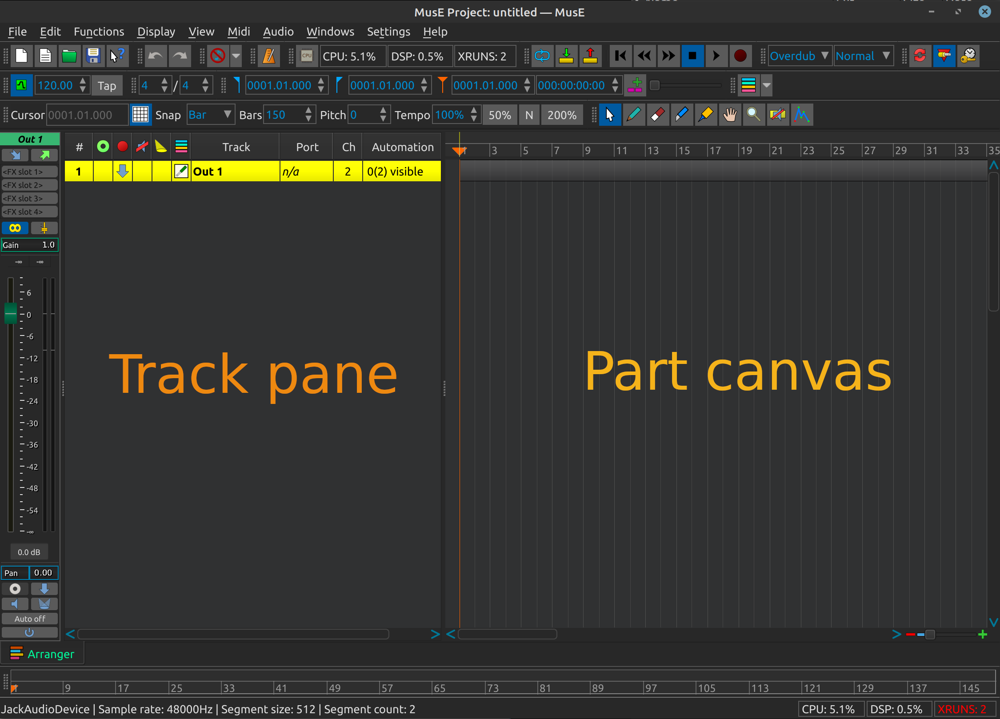
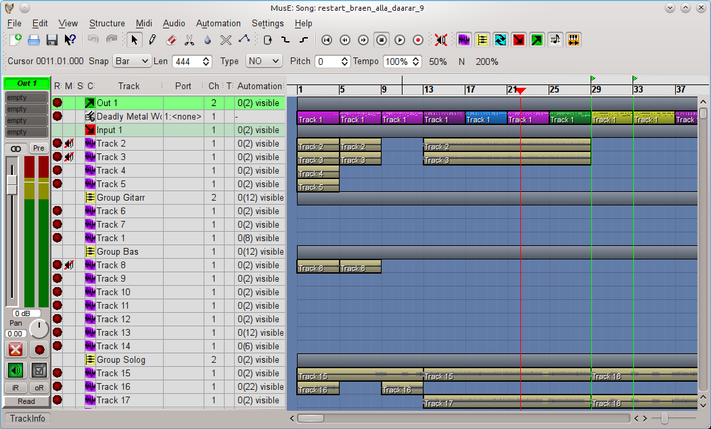
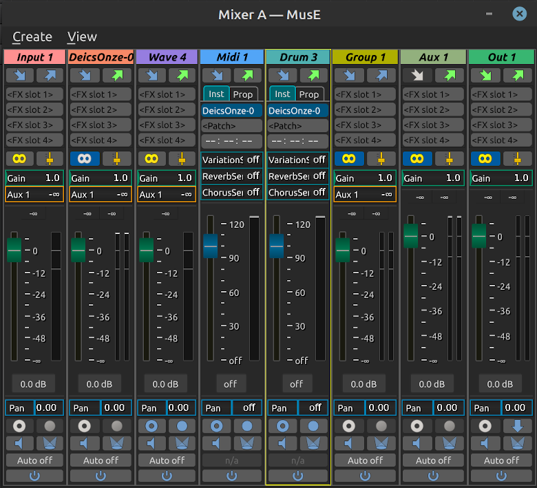

Descripción básica de MusE
En esta sección haremos un recorrido paso a paso de todas las diferentes utilidades de edición (editor), su propósito y qué funciones proporcionan.
Ventana principal / Arreglador (Arranger)

Esta es la ventana principal de MusE, el Arreglador (arranger), y es lo que le da la bienvenida al iniciar MusE. El Arreglador consta de dos partes principales, el panel de pistas (track panel) y el panel de partes (part canvas). El panel de pistas enumera todas las pistas actualmente visibles y el panel de partes contiene todas las partes (o secciones) de la composición. La captura de pantalla de arriba muestra un proyecto vacío. A continuación se muestra MusE con una canción en progreso, resulta que no era una muy buena canción, pero para nuestros propósitos está bien. En la captura de pantalla hay muchas pistas visibles en el panel de pistas, cada una tiene un icono que indica su tipo, pista de onda, entrada, salida, etc., veremos más sobre eso más adelante. En el panel del Arreglador se ven varias partes, las que están en amarillo están en los archivos de ondas de esta composición, las líneas multicolores son partes diferentes de una pista de percusión.

Mezclador
Si elige Vista > Mezclador A o B en el menú de la ventana principal, aparecerá el mezclador como se ve a continuación. El mezclador se abrirá con todas las opciones habilitadas, mostrando los canales para todas las pistas en la configuración actual. Dependiendo de lo lejos que haya llegado, esta vista puede volverse muy grande, por lo que puede ser una buena idea limitar lo que se ve en el Mezclador. Desde el menú de vista (View), todos los diferentes tipos de pistas se pueden activar/desactivar en el mezclador. A algunos les puede resultar una buena idea usar la configuración de dos mezcladores A y B con una configuración diferente y almacenar esto en sus plantillas de canciones. Veremos más sobre esto en la sección Plantilla de canción (song template). Se puede argumentar que todo en MusE sigue el concepto Unix de que todo es un archivo.

Los tipos de pistas visibles en el mezclador (y el panel de pistas) son: - Audio output (Salida de Audio) - Audio input (Entrada de Audio) - Group track (Pista de Grupo) - Aux track (Pista Auxiliar) - Wave track (Pista de Onda) - Synth track (Pista de Sintetizador) - Midi track (pista MIDI) - Drum track (Pista de Percusión)
Atajos de teclado en el mezclador
Consulte el capítulo sobre atajos de teclado para obtener más información.